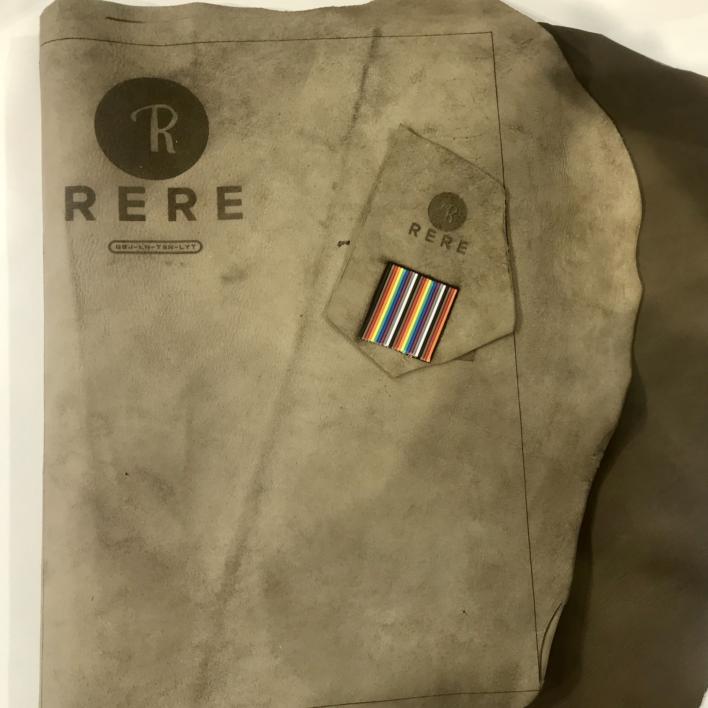
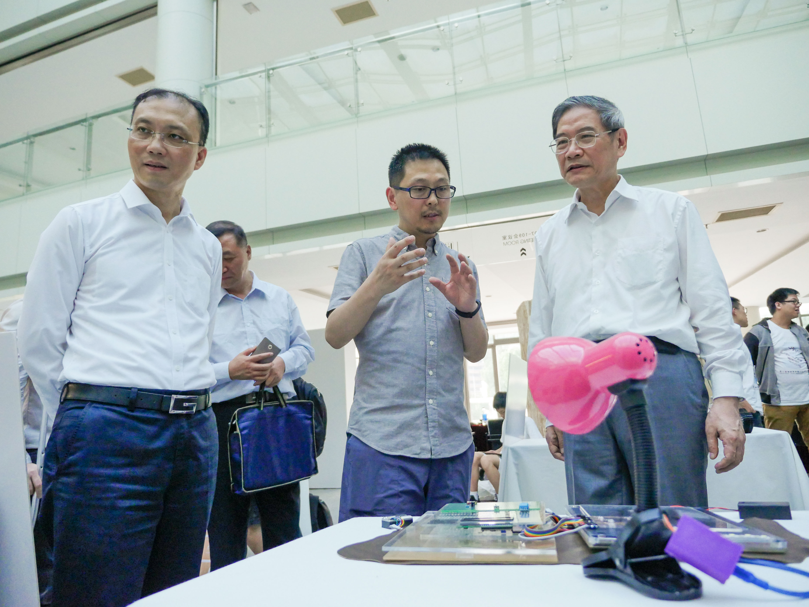
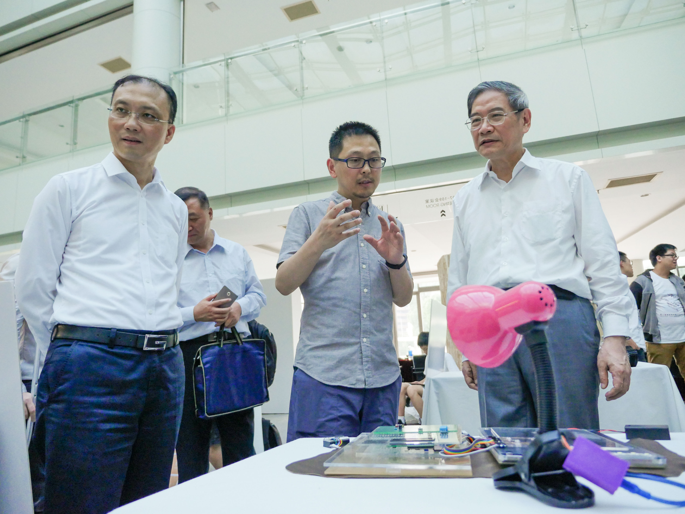

ReRe-未来之书
| author： | QINBINGJIA、TANSHUHUA、LIUHENG、LUOYUTONG |
| time： | 2018.08 |
| 硬件： | Arduino UNO、Arduino Nano、脑电检测模块、蓝牙HC-5、SD卡扩展、超声波测距模块、音响、touch模块、button模块、光敏传感器、LED、铜纸、亚克力板、牛皮、杜邦线 等 |
| 代码： | https://github.com/BING16/book |
| 产品页： | https://github.com/ReRebook/ReRe |
v1.0
2018.08.22：
在24小时马拉松后完成硬件、代码、路演及评审等，脑电信息存储及APP开发、电路集成暂未实现。
基本样式
路演海报、评审及颁奖
 
 
功能及介绍
教育变革的最大驱动力，是以科技为驱动的生产力。 ReRe用技术还原/模拟自然，还原/模拟人类知识中信息的呈现（从文字书到多媒体到虚拟现实）和交互方式（从键盘到触控、语音、手势、肌电、眼神、脑电等）。我们在不断的decode自然界的奥秘，再创新科技去复制或模拟她，从与人的交互中获得其价值，并不断从兴趣方向入手进行预测未来的深度培养。
第一个reader是使用者，读书者。ReRe的内容中有我们四个团队成员对知识教育的思考，并把自己心目中未来之书依托科技手法以内页为示例尝试更好的知识传播装置和方式。
第二个reader是ReRe本身。Rere从与人的交互中获得数据并分析价值，从读取用户的兴趣为重点不断从兴趣方向入手监控，进行对使用者的未来预测并在ReRe未来的规划中推荐新的内页。
ReRe -未来之书内容及知识传输模式的期望。 ReRe内页： 艺术自然类：导电墨水雕刻实现夜景模式观画 音乐创作类：乐谱辐射雕刻、 电子琴音乐解码控制播放 科学发现类： 内页内置科学仪器如pm2.5测量仪、湿度计等
ReRe - 动态优化，预测未来 读书环境感应 - 设置光敏元件自动改善内置灯泡光照（并有手控按钮）超声波距离监测装置防止读书距离过近 数据储存 -内嵌内存卡 通过Arduino蓝牙记录数据 物联网设计 - 通过Arduino蓝牙与其他智能家具无线交流 脑电波监测插件 - 实时监测数据并储存于内存卡、经过处理分析注意力程度并可视化表现 。